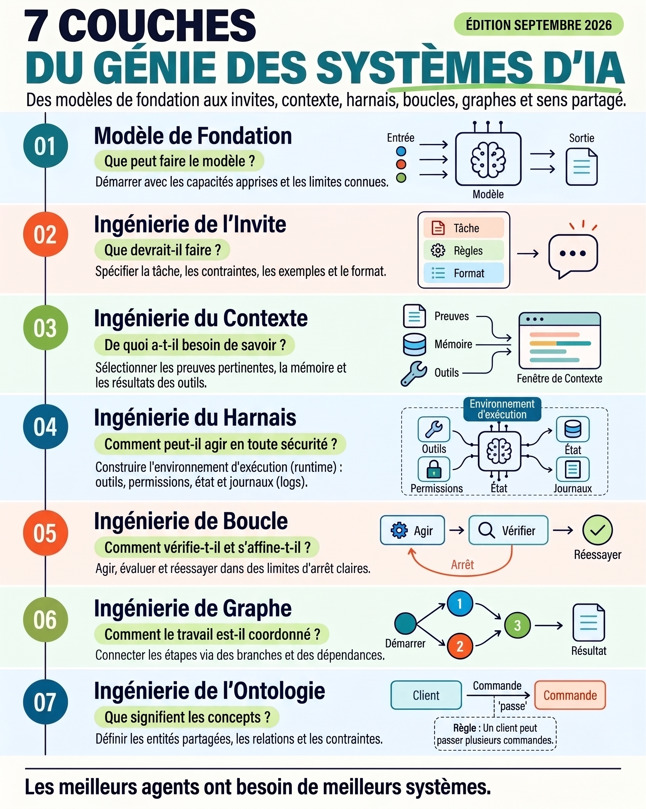

Les 7 couches du génie des systèmes d’IA
Une carte pour passer d’un modèle de fondation à un système agentique fiable : invite, contexte, harnais, boucle, graphe et ontologie.

Idée directrice : un bon agent ne compense pas un mauvais système. Chaque couche répond à une question différente et fournit les fondations de la suivante.
Modèle de fondation — Que peut faire le modèle ?
Commencez par les capacités apprises et les limites connues : raisonnement, suivi d’instructions, vision, contexte, outils et risques d’hallucination.
Capacités
Ce que le modèle sait faire avec ses paramètres.
Limites
Ce qui exige preuves, outils, garde-fous ou intervention humaine.
Quiz
Quelle est la première question à poser ?
Ingénierie de l’invite — Que devrait-il faire ?
Une invite fiable spécifie la tâche, les contraintes, les exemples et le format attendu. Elle transforme une capacité générale en comportement observable.
Tâche : classer le ticket.
Règles : ne rien inventer ; citer la preuve ; demander une précision si elle manque.
Exemples : {"ticket":"...","classe":"facturation"}
Format : JSON {"classe": string, "preuve": string, "confiance": number}Quiz
Que faut-il ajouter pour rendre la sortie testable ?
Ingénierie du contexte — De quoi a-t-il besoin de savoir ?
Sélectionnez les preuves pertinentes, la mémoire et les résultats d’outils. La fenêtre de contexte doit être alimentée par un contexte utile, traçable et proportionné.
Quiz
Quel contexte est préférable ?
Ingénierie du harnais — Comment agir en sécurité ?
Le harnais est l’environnement d’exécution : outils, permissions, état et journaux. Il définit ce que l’agent peut réellement faire et ce qui est traçable.
Outils
Interfaces typées, timeouts et validation des arguments.
Permissions
Principe du moindre privilège, sandbox et approbation pour les actions sensibles.
État & logs
Checkpoints, erreurs, entrées/sorties et audit reconstructible.
Quiz
Quelle couche encadre les permissions et les journaux ?
Ingénierie de boucle — Comment vérifier et s’affiner ?
Un agent agit, évalue, puis réessaie si nécessaire. La boucle doit avoir des critères de réussite, des limites d’arrêt et une stratégie d’échec.
while iteration < MAX_ITERATIONS:
action = agent.act(state)
observation = harness.execute(action)
verdict = evaluator.check(observation)
if verdict.ok:
break
state = refine(state, verdict.gaps)Quiz
Pourquoi une limite d’itérations est-elle indispensable ?
Ingénierie de graphe — Comment coordonner le travail ?
Connectez les étapes via des branches et des dépendances. Le graphe rend visibles les parcours, les parallélismes, les jonctions et les conditions.
Quiz
Quel est l’intérêt d’un graphe explicite ?
Ingénierie de l’ontologie — Que signifient les concepts ?
Définissez les entités partagées, leurs relations et leurs contraintes. Une ontologie commune évite que chaque agent interprète différemment « client », « commande » ou « incident ».
Client --passe--> Commande Contrainte : un client peut passer plusieurs commandes. Commande --contient--> LigneCommande Identifiant : Client.id et Commande.id sont uniques.
Quiz
Que formalise une ontologie ?
Diagnostiquer un agent couche par couche
Utilisez cette checklist avant d’ajouter de nouveaux agents ou outils. Corrigez la couche la plus basse qui explique le symptôme.